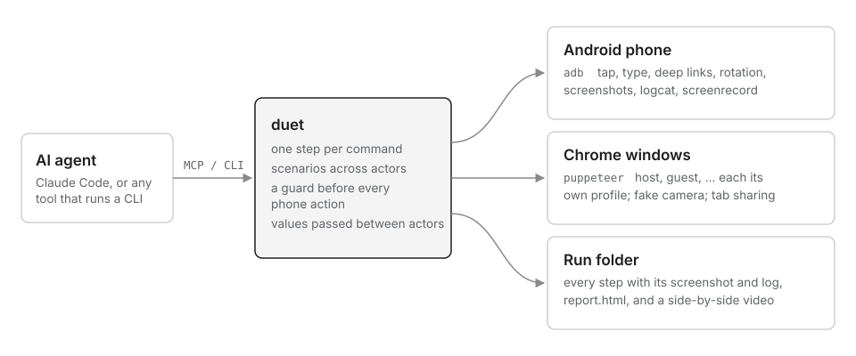

Let an AI agent test a feature on a real phone and in a browser at the same time, while you watch.
duet is a small harness around adb and Puppeteer. It gives a coding agent such as Claude Code safe commands that each do one thing, runs several actors in one scenario (a host in Chrome, a viewer on an Android phone), and keeps every step with its screenshot, the device log, a report and a video. When something fails, the agent can see why, fix the code, and run the same steps again.
A comment shows its author's new name
Alex comments on a post from the phone, and Maya, who has the same post open in Chrome, sees it arrive. Alex then changes their display name in Profile. The planted bug keeps, in each comment, the name its author had when writing it, so a rename never reaches comments already posted. The phone shows your own comments with the name from your profile, so on the phone the rename looks right and a phone-only test passes.
The test checks both screens. With the bug the phone shows Alex Rivera, Maya's browser still shows Alex, and the run fails at step 24. With the fix Maya sees the new name, replies, and the reply reaches the phone: all 29 steps pass.
phone: tap --text "Write a comment"
phone: type "Looks great on mobile too"
phone: tap --text "Post" --exact
maya: wait-for --text "Looks great on mobile too" --timeout 5000
phone: tap --text "Profile" --exact
phone: tap --text "Display name"
phone: type "Alex Rivera"
phone: tap --text "Save" --exact
phone: tap --text "Feed" --exact
phone: wait-for --text "Alex Rivera"
maya: wait-for --text "Alex Rivera" --timeout 6000Sign in on the right browser
Signing in on the web by approving on your phone. Each browser shows its own 6-digit code; the phone enters one and approves. The planted bug checks the code, then signs in the newest waiting browser. With one browser waiting that is the right one, so every one-browser test passes.
The test keeps two browsers waiting, reads the laptop's code from its page, types it on the phone, and checks that the laptop is signed in and the desktop is not. With the bug the desktop gets signed in and the run fails; with the fix it passes all 19 steps.
laptop: eval "document.querySelector('#code').dataset.code" --save LAPTOP_CODE
phone: launch --restart
phone: tap --text "Code from the computer"
phone: type ${LAPTOP_CODE}
phone: tap --text "Approve" --exact
laptop: wait-for --text "Signed in as Phone owner"
desktop: wait-for --text "Waiting for your phone"Full screen survives turning the phone sideways
A viewer taps "Full screen" on a presenter's shared tab. The phone turns sideways, the layout switches to two panes, the stage remounts, and full screen closes itself. A screenshot after the tap says nothing happened. The device log says what did: full screen open, stage unmounted, full screen closed, within 150 ms. Unit tests and type checks never see it.
How it works

Safe on someone's own phone
Before every action duet checks what is in front. It taps only inside the app under test, looks only at that app or the home screen, and fails closed when it cannot tell. It never uninstalls and never clears the log.
Evidence, not "it passed"
Each run leaves a report with every step, its screenshot and log lines, the failure first, and with --record a captioned video of every actor side by side.
Several actors, one scenario
Steps are the same commands an agent types, one actor per line. Values pass between actors, so a code shown in a browser can be typed on the phone.
For an agent first
Every command prints one JSON object, and the MCP server returns screenshots as images sized so the model can tap what it sees.
Try it
You need Node 22.12+, Google Chrome, and for the phone, adb with USB debugging on.
npm install -g duet-qa
duet browser open host https://example.com
duet browser ui host
duet browser screenshot host
duet browser close host
duet phone status
# from Claude Code
claude mcp add duet -- duet mcpThe package is duet-qa on npm; the command is duet. The README covers scenarios, recording, the sample apps (run those from a clone) and what bit us along the way.
What it is not
A testing framework. Tools like Maestro, Playwright MCP and many adb-based servers already let an agent drive one phone or one browser well. duet is the part they leave out: several actors in one scenario, on a real phone that may be someone's own, with the log next to every failure. Android and Chrome only for now.